Processing thermal images and videos
Eleven adjustment sliders and eleven effects — blur, edge detection, emboss, posterize, and more — for photos and videos alike, in the app and on the web, with the temperature data left untouched
After a thermal photo or video has been taken, Infrared Explorer can change how it looks: brighten a dim picture, bring out faint details, or restyle it altogether with effects such as edge detection, posterize, and emboss. These tools are collected in one place, called Process. They work on photos and on recorded videos (recordings), in each of the three views of a photo or recording (Infrared, Visible, and Blended), in the app and on the website.
Processing changes the picture, never the measurement. The temperature data saved with a photo or recording is not touched, so thermometers, isotherms, and graphs keep reading the true temperatures, and the original picture can be brought back at any time.
Opening Process in the app
On the page of a photo, tap the Process key. In the player of a recording, open More and choose Process. A panel opens under the picture, which stays in full view while you work on it (Figure 1). The panel has two tabs, Adjust and Effects. What you do applies to the view on screen: the Infrared, Visible, and Blended views each keep their own settings.
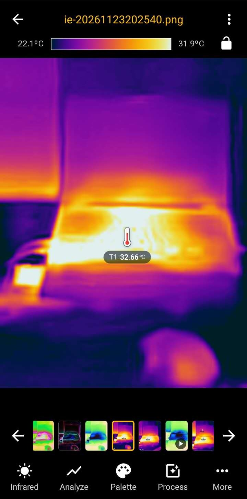
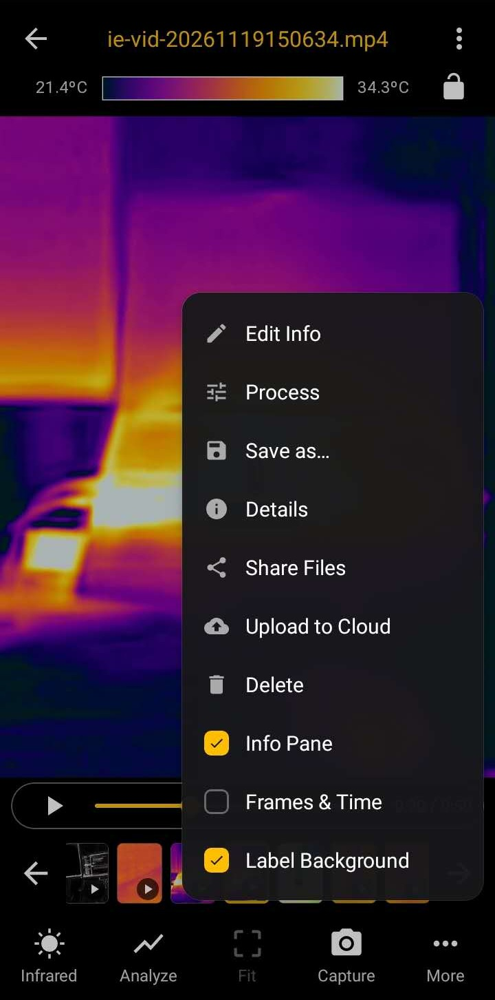
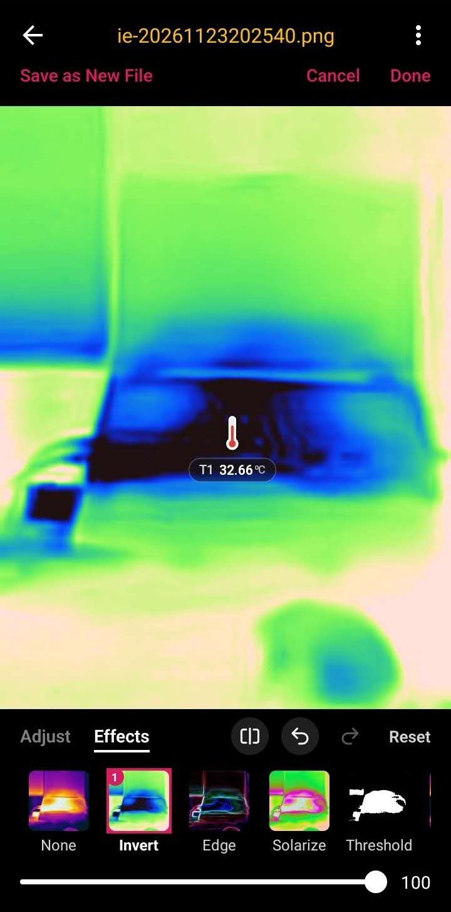
Figure 1: Opening Process in the IE app. Left: the page of a photo, with the Palette and Process keys under the picture. Middle: the More menu of a recording, with Process in it. Right: Process open on the photo, with the Effects tab showing and the Invert effect on. The thermometer still reads the same temperature.
Adjust: eleven sliders and Auto
The Adjust tab works like the photo editor of a phone. Pick a name from the row and drag the slider under it. Every slider starts at 0, which leaves the picture as it is.
| Slider | What it changes |
|---|---|
| Brightness | Lightens or darkens the picture along a curve, so that a dim picture comes up without its bright areas washing out. |
| Exposure | Lightens or darkens everything by the same factor, up to two stops either way, as the exposure of a camera does. |
| Contrast | Pushes the light and dark tones apart, or brings them together. |
| Highlights | Lightens or darkens only the light parts of the picture. |
| Shadows | Lightens or darkens only the dark parts of the picture. |
| Saturation | Makes all colors stronger or weaker. All the way down, the picture is gray. |
| Vibrance | Like Saturation, but it acts mostly on the dull colors and hardly on the vivid ones. |
| Warmth | Shifts the colors toward red (warmer) or toward blue (cooler). This is the color cast of the picture, not its temperature. |
| Tint | Shifts the colors toward magenta or toward green. |
| Hue | Turns every color around the color wheel, up to half a turn either way. |
| Sharpness | Makes edges and fine details crisper. |
Auto sets Brightness and Contrast for you. It measures how light and dark the picture on screen is, and leaves the other sliders where they are. It is handy for visible-light pictures taken indoors, which are often dim, like the one in Figure 2.
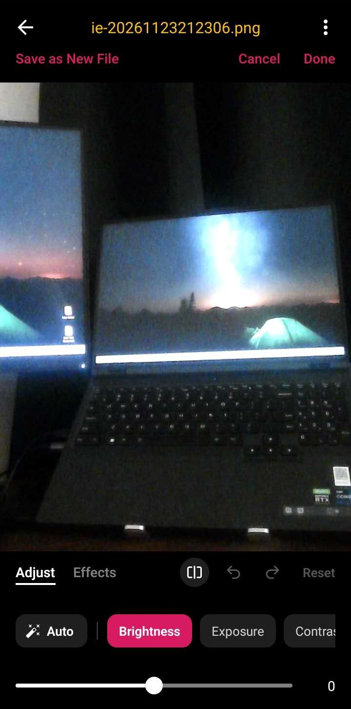
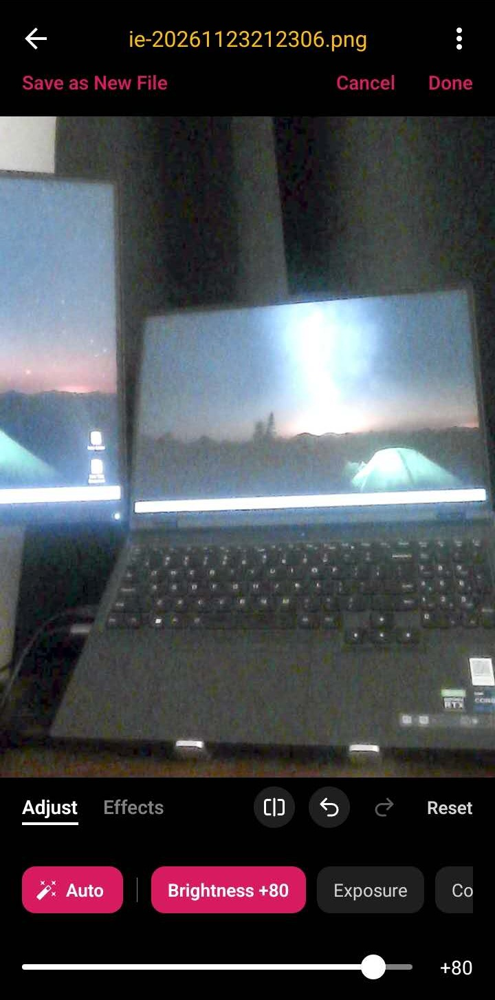
Figure 2: The Adjust tab on a dim visible-light photo. Left: the photo as it was taken, with every slider at 0. Right: after a tap on Auto, which set Brightness to +80 here.
Effects
The Effects tab shows a row of small previews of your own picture, one for each effect. Tap a preview to put that effect on, and drag the slider under the row to set how strong it is. The slider belongs to the effect you tapped last: tap that effect again to take it off, or tap another effect that is on to get its slider. None takes all the effects off. Figure 3 shows the same thermal photo with each of the eleven effects.
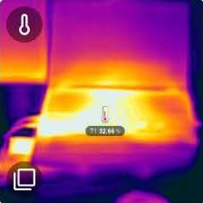
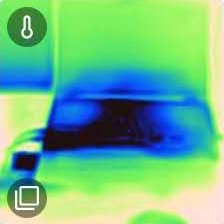
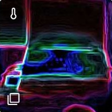
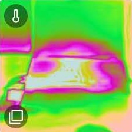
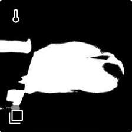
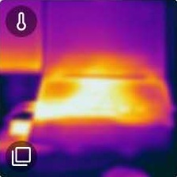
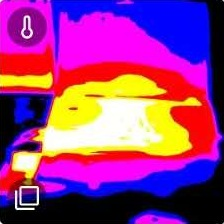
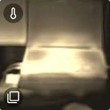
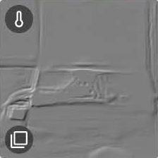
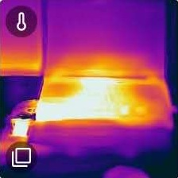
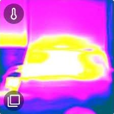
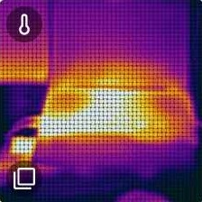
Figure 3: One thermal photo and eleven copies of it, each with a different effect, as their tiles appear in the gallery of the app. Displace moves this picture only along its edges, so its tile looks the most like the original.
| Effect | What it does | What its slider sets |
|---|---|---|
| Invert | Replaces every color with its opposite, as in a photographic negative. | How much of the effect is mixed in |
| Edge | Finds where the picture changes sharply and draws those outlines on black (a Sobel filter). | How bright the outlines are |
| Solarize | Folds the tones: dark areas turn light, middle tones turn dark, and light areas stay light. | How much of the effect is mixed in |
| Threshold | Makes every pixel black or white, depending on whether it is darker or lighter than a cutoff. | Where the cutoff is |
| Blur | Smooths the picture (a Gaussian blur). | How wide the blur is |
| Posterize | Keeps only a few levels of each color, so that smooth gradients become bands. | How few levels are kept, from 31 down to 2 |
| Sepia | Gives the picture the brown tone of an old photograph. | How much of the effect is mixed in |
| Emboss | Turns the picture into a gray relief that looks lit from one side. | How deep the relief is |
| Displace | Moves each pixel according to how fast the brightness changes around it, which distorts the picture along its edges. | How far the pixels are moved |
| Glow | Adds a soft, blurred copy of the picture to itself, so that bright areas bloom. | How strong the glow is |
| Weave | Redraws the picture as woven threads with dark gaps between them. | How much of the effect is mixed in |
Effects can be stacked. Any number of them can be on at once, and they are applied in the order in which you added them; each preview shows its place in that order. The order matters: Threshold followed by Blur gives black and white shapes with soft edges, whereas Blur followed by Threshold gives smooth shapes with hard edges.
The effects are applied first and the sliders of the Adjust tab after them, so the sliders act on the picture you see. For example, Edge leaves thin lines on a black background, and Brightness can then make those lines stand out.
Videos, too
Process does for a recording everything it does for a photo. The settings apply to every frame, and the recording plays processed right away, with no wait for a new video to be made. While the panel is open, the playback bar stands on the picture, so the recording can be played or moved to another frame as you work. Thermometers, thermorulers, and isotherms keep working on a processed recording (Figure 4).
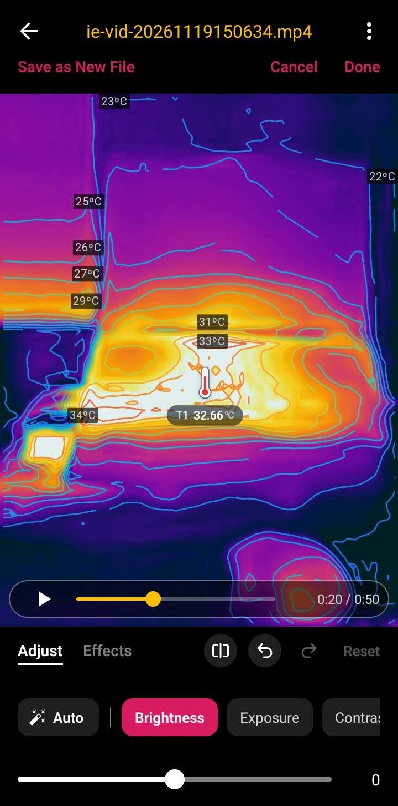
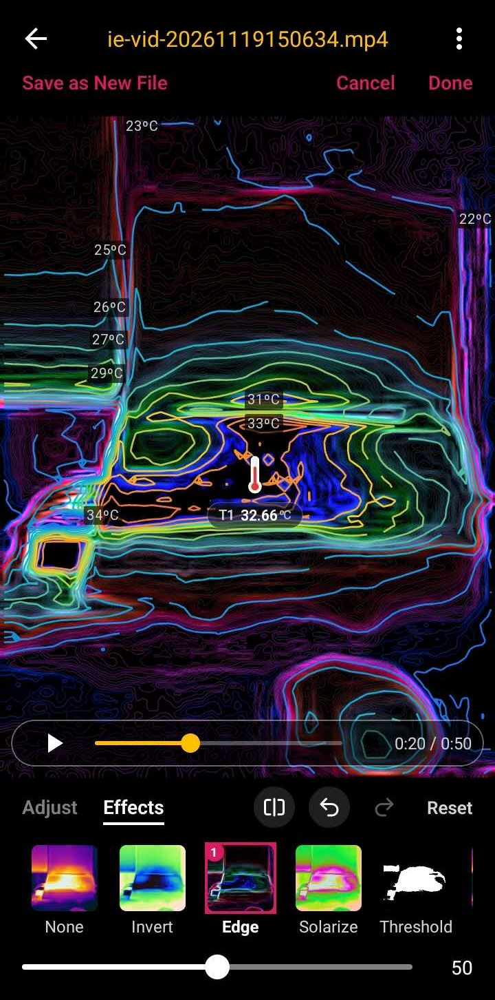
Figure 4: Process on a recording that has isotherms and a thermometer on it. Left: the Adjust tab, with the Auto key, the names of the sliders, and the slider of the one that is picked; the picture is as it was recorded. Right: the Effects tab with the Edge effect on. The isotherms and the thermometer come from the temperature data, so they are the same in both.
Nothing is lost
Process never rewrites a photo or a recording. Its settings are kept beside the file and applied whenever the picture is shown.
- Hold the compare key (the square divided in two) to see the picture as it was taken, and let go to see it processed again.
- Undo and Redo step through what you have done since the panel opened. Reset puts every slider back to 0 and takes all the effects off.
- Done keeps the settings and Cancel discards them. To get the original back later, open Process again, tap Reset, and then Done.
- Save as New File makes a copy of the photo or recording, temperature data and all, that opens processed. The one you started from stays as it was.
- To take a processed picture out of the app, use the More menu: Save to System Gallery or Share Files on the page of a photo, and Save as… in the player of a recording. The image or video that goes out has the processing in it.
The color scale is the one thing that leaves the screen. The colors of a processed Infrared or Blended picture no longer stand for temperatures, so the app hides the scale above such a picture instead of showing one that would be wrong. The temperature readings come from the data, not from the colors, and stay correct. In the gallery, a processed photo or recording is shown by its processed picture, as in Figure 3.
Palette or Process?
There is another way to change the colors of a thermal photo: the Palette key, next to Process on the page of a photo. It shows the photo in ten palettes, and a tap picks one (Figure 5).
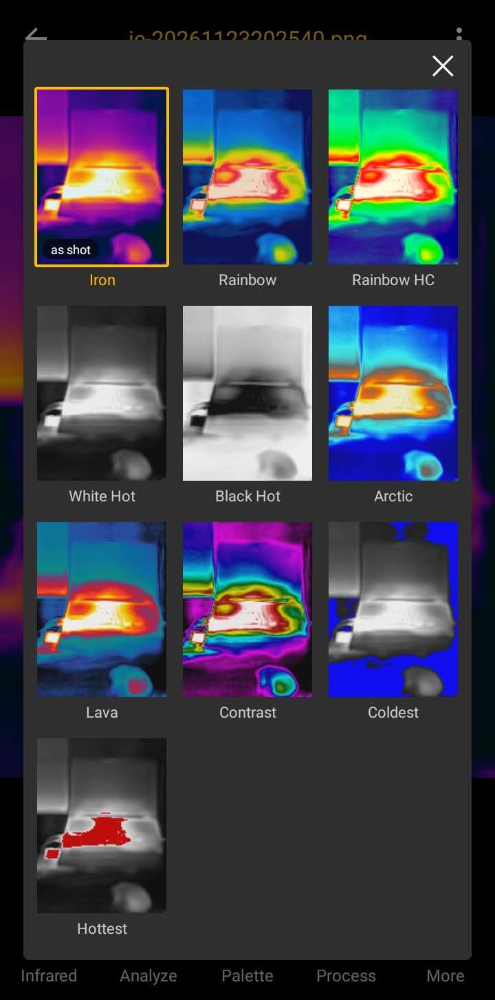
Palette and Process do different jobs. A palette is a rule that turns temperatures into colors, so a photo shown in another palette is still a map of temperature, and it keeps its color scale. Process changes the colors themselves, which then no longer stand for temperatures. Use Palette when the colors should still read as temperatures, and Process when it is the look of the picture that matters. The two can be combined: Process works on the photo in whichever palette it is shown.
Palette works on the Infrared view of a photo. A recording keeps the palette that was chosen on the camera screen when it was recorded.
On the website
A photo or recording uploaded from the app takes its Process settings with it. At ie.intofuture.org it opens processed, as it does on the phone, and its card shows the thumbnail it has in the gallery of the app.
The website has Process as well (Figure 6). The Process key in the toolbar of the player (three small sliders) opens a panel beside the picture (under it on a phone), with all eleven sliders and, under them, the effects. Auto, the compare key, Undo, Redo, and Reset work as they do in the app. Click an effect to put it on and click it again to take it off; each effect that is on has a slider of its own.
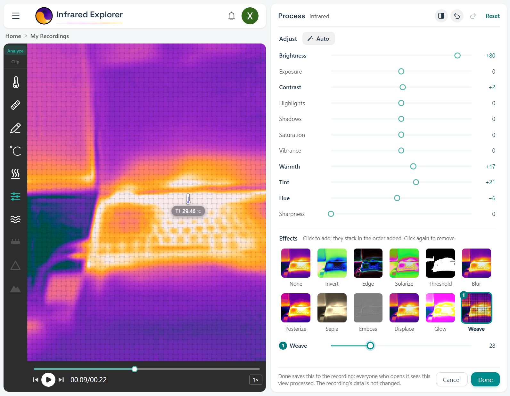
If the recording is yours, Done saves the settings with it: everyone who opens it sees it processed, and the settings come along when the recording is saved to the gallery of a phone. It works the other way too: Done in the app updates a recording that has already been uploaded. If the recording is someone else's, you can still try Process on it. Your changes stay in your own browser and are gone when you leave the page.
How it works
In image processing, filters are mathematical functions that turn one picture into another. Each slider and each effect of Process is such a function: it computes the new color of a pixel from its old color and, for effects such as Blur, Edge, and Emboss, from the colors of the pixels around it. Infrared Explorer runs these functions on the graphics processor, for every pixel of every frame as it is drawn, which is why a recording can be processed while it plays. The app and the website run the same functions, so a picture processed in one looks nearly the same in the other.
← Back to Infrared Explorer